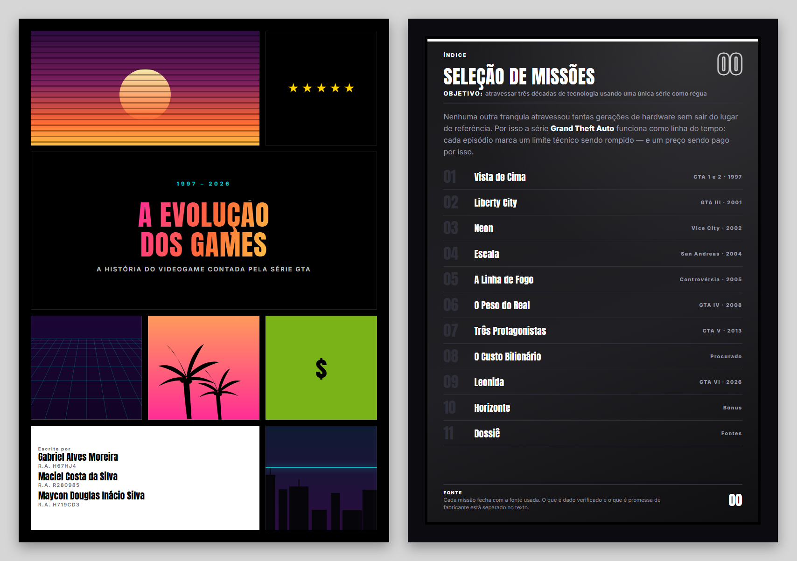
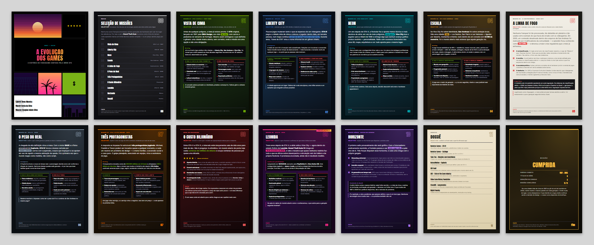

1997 – 2026
A Evolução
dos Games
A história do videogame contada pela série GTA

| Nome | R.A |
|---|---|
| Gabriel Alves Moreira | H67HJ4 |
| Maciel Costa da Silva | R280985 |
| Maycon Douglas Inácio Silva | H719CD3 |
Campus SJC Dutra - São José dos Campos (SP)
| Número | R.A. | Nome | Curso |
|---|---|---|---|
| 1 | H67HJ4 | Gabriel Alves Moreira | Análise e Desenvolvimento de Sistemas |
| 2 | R280985 | Maciel Costa da Silva | Análise e Desenvolvimento de Sistemas |
| 3 | H719CD3 | Maycon Douglas Inácio Silva | Análise e Desenvolvimento de Sistemas |
Turma: DS4A48
Grupo composto por 3 alunos do mesmo campus, responsáveis pela pesquisa, redação, desenvolvimento, publicação e divulgação da obra.
Ano: 2026 | Semestre: 4º
TECNOLOGIA E PRODUÇÃO · Desenvolvimento de aplicativos/software/website para a comunidade.
Ebook (50 horas)
| Organização Parceira | informar a escola, biblioteca, curso técnico ou coletivo atendido |
| Público Beneficiário | Estudantes do ensino médio e técnico, ingressantes em cursos de tecnologia e comunidade externa interessada em história e desenvolvimento de jogos |
A presente atividade de extensão universitária consistiu na pesquisa, redação e desenvolvimento editorial do e-book "A Evolução dos Games: a história do videogame contada pela série GTA", obra digital de 14 folhas em formato A4, organizada em 11 capítulos e cerca de 2.700 palavras, publicada gratuitamente na internet para uso educacional.
O problema que a obra endereça é o acesso a conhecimento técnico organizado. A história da computação aplicada ao entretenimento costuma chegar ao público em duas formas igualmente limitadas: a matéria de expectativa, que trata anúncio comercial como fato consumado, e o material técnico fechado em vocabulário inacessível a quem ainda não é da área. O e-book adota uma terceira via: usar uma única franquia conhecida do público como régua para medir três décadas de evolução técnica, explicando cada salto de engenharia pelo problema concreto que ele resolveu.
A obra percorre o período de 1997 a 2026 em ordem cronológica. Cada capítulo está ancorado em um marco técnico verificável e trata um conceito de computação específico, conforme apresentado no Quadro 1.
Quadro 1 – Capítulos do e-book e conceitos de computação tratados
| Capítulo | Recorte | Conceito tratado |
|---|---|---|
| 01 — Vista de Cima | GTA 1 e 2 · 1997–1999 | Restrição de memória como condicionante de design; mundo aberto sem 3D |
| 02 — Liberty City | GTA III · 2001 | Renderização em terceira pessoa; mapa contínuo sem carregamento |
| 03 — Neon | Vice City · 2002 | Direção de arte e licenciamento sobre a mesma base técnica |
| 04 — Escala | San Andreas · 2004 | Mundo aberto extenso em hardware de 32 MB de memória |
| 05 — A Linha de Fogo | 2005–2011 | Classificação etária, autorregulação e jurisprudência |
| 06 — O Peso do Real | GTA IV · 2008 | Física procedural em tempo real versus animação pré-gravada |
| 07 — Três Protagonistas | GTA V · 2013 | Troca de personagem; software como serviço |
| 08 — O Custo Bilionário | Indústria | Ciclos de desenvolvimento, orçamento, crunch e monetização |
| 09 — Leonida | GTA VI · 2026 | Iluminação global, simulação de multidões e sistemas emergentes |
| 10 — Horizonte | Prospectivo | Computação em nuvem, latência, realidade virtual e IA generativa |
| 11 — Dossiê | Referências | Nove fontes primárias com link para verificação |
Fonte: Elaborado pelos autores (2026).
Dois capítulos merecem destaque pelo alcance formativo:
A obra estabelece uma regra explícita e visível ao leitor: o que é resultado medido e o que é promessa de fabricante aparecem separados no texto. O capítulo sobre o título ainda não lançado afirma data e plataformas — conferidas na página oficial da empresa desenvolvedora, com a data da verificação registrada no rodapé da própria folha —, mas classifica explicitamente as declarações de desempenho e simulação como promessa de material promocional. Cada capítulo encerra com a fonte utilizada, e o capítulo final reúne as nove referências com link direto, permitindo ao leitor auditar qualquer afirmação.
A peça foi construída como aplicação web estática, sem framework e sem bibliotecas de terceiros; o único recurso externo carregado em tempo de execução são as duas famílias tipográficas, servidas pelo Google Fonts.
A obra foi submetida a auditoria automatizada de contraste segundo o critério WCAG 2.1 nível AA, executada no navegador com as fontes já carregadas: 321 elementos de texto foram medidos contra o fundo efetivo de cada um, sem nenhuma falha, com margem mínima de 4,78:1 sobre o mínimo exigido de 4,5:1. Somam-se foco visível para navegação por teclado e respeito à preferência de movimento reduzido do sistema operacional.
Para distribuição impressa, a obra reproduz o formato A4 exato, com verificação embutida: um auditor de paginação alerta sempre que o conteúdo de uma folha ultrapassa o limite da página e seria cortado na exportação para PDF, garantindo que a versão impressa seja fiel à digital.
Além da publicação em acesso aberto, a obra foi divulgada pelos autores no LinkedIn, rede profissional em que se concentra o público de estudantes e profissionais de tecnologia, com link direto para a leitura gratuita. A publicação usa a imagem de compartilhamento própria do e-book, dimensionada no padrão exigido pela rede (1200 × 630 pixels). Informar a data da publicação.
Conferir e ajustar à divisão real de tarefas antes de submeter.
Atuou na pesquisa histórica, curadoria de fontes primárias e redação didática, aplicando conhecimentos das disciplinas de Metodologia Científica, Comunicação e Expressão e Ética e Legislação Profissional. Foi responsável por levantar e verificar as nove referências que sustentam a obra, estabelecer a regra editorial que separa dado medido de promessa comercial, redigir o capítulo sobre classificação etária e jurisprudência e adequar a linguagem técnica a um público que ainda não cursa tecnologia, preservando a precisão dos conceitos.
Atuou na revisão editorial, adequação às diretrizes de extensão e planejamento da divulgação, aplicando conhecimentos das disciplinas de Comunicação e Expressão, Metodologia Científica e Interface Homem-Computador. Foi responsável por revisar a clareza dos capítulos para o público não técnico, verificar a consonância da obra com os critérios de impacto comunitário da UNIP e estruturar a divulgação no LinkedIn, incluindo o texto da publicação e o acompanhamento das estatísticas de alcance registradas neste relatório.
Atuou no desenvolvimento front-end, arquitetura de estilos, acessibilidade e publicação, aplicando conhecimentos das disciplinas de Programação Web, Interface Homem-Computador e Engenharia de Software. Foi responsável por estruturar o CSS em arquitetura modular, implementar o sistema de temas em que a cor de cada capítulo se propaga por uma única variável, codificar o suporte nativo a impressão A4 e o auditor automático de paginação — reproduzidos na íntegra no Anexo A deste relatório —, conduzir a auditoria de contraste WCAG AA e publicar a obra em servidor de acesso público com versionamento aberto.
A atividade entregou à comunidade uma obra de referência sobre história da computação aplicada ao entretenimento, gratuita, sem anúncios, sem rastreadores e sem exigência de cadastro, acessível por navegador em qualquer aparelho e disponível também para impressão em A4 para distribuição física.
A atividade atendeu diretamente informar o número de pessoas atendidas presencialmente e onde. A divulgação no LinkedIn ampliou o alcance da obra para além desse público, registrando impressões e reações da publicação, conforme as estatísticas do LinkedIn na data de fechamento do relatório.
Resultados objetivos e verificáveis:
A atividade está alinhada aos seguintes Objetivos de Desenvolvimento Sustentável (ODS) da ONU:
A obra foi desenvolvida pelos alunos e publicada em servidor de acesso público, com leitura disponível em qualquer dispositivo com navegador, e divulgada no LinkedIn. Informar o local e a data da apresentação ou distribuição presencial — as Orientações da UNIP (p. 6) exigem que a atividade seja realizada presencialmente.
A comprovação da atividade fundamenta-se na própria peça produzida, reproduzida na íntegra no Anexo A a partir da folha 14, na obra publicada em acesso aberto, na publicação de divulgação no LinkedIn e nas capturas apresentadas a seguir.
O anexo reproduz a peça como ela é distribuída — mesma diagramação, mesmo formato de impressão. Por isso as folhas do anexo não recebem o número de página do relatório, que cairia sobre a arte; o sumário anuncia onde o anexo começa. Imprimir apenas o intervalo do anexo devolve a peça pronta para uso. O e-book mantém, no pé de cada folha, a numeração interna da própria peça.
Figura 1 – Capa e Seleção de Missões (índice) do e-book "A Evolução dos Games"

Fonte: Acervo dos autores (2026) — reprodução da peça produzida na atividade.
Figura 2 – As 14 folhas do e-book, cada capítulo com seu tema de cor

Fonte: Acervo dos autores (2026) — reprodução da peça produzida na atividade.
Figura 3 – Publicação do e-book "A Evolução dos Games" no LinkedIn
")
Fonte: Acervo dos autores (2026) — captura da publicação no LinkedIn.
Anexar a captura da publicação: clicar na imagem acima e escolher o arquivo, ou salvá-lo como assets/3.png.
1997 – 2026
A história do videogame contada pela série GTA
Índice
Nenhuma outra franquia atravessou tantas gerações de hardware sem sair do lugar de referência. Por isso a série Grand Theft Auto funciona como linha do tempo: cada episódio marca um limite técnico sendo rompido — e um preço sendo pago por isso.
Missão 01 · GTA 1 e GTA 2 · 1997–1999
Antes de qualquer polígono, a ideia já estava pronta. O GTA original, lançado em 1997 pela DMA Design, era visto de cima, com carros e pedestres do tamanho de formigas. Mesmo assim entregava o que definiria o gênero: uma cidade inteira aberta, sem corredor, onde a missão era uma opção e não uma obrigação.
O conceito estava provado e o hardware, prestes a alcançá-lo. Faltava girar a câmera noventa graus.
Missão 02 · GTA III · 2001
Poucos jogos mudaram tanto o que se esperava de um videogame. GTA III pegou a cidade vista de cima e colocou o jogador dentro dela, em terceira pessoa, num mapa contínuo sem tela de carregamento entre bairros. Durante anos, "clone de GTA" virou o nome informal de um gênero inteiro.
A cidade agora era um lugar. Faltava dar a ela uma época, uma trilha sonora e um tamanho que ninguém achava possível.
Missão 03 · GTA Vice City · 2002
Um ano depois de GTA III, a Rockstar fez a aposta menos técnica e mais decisiva da série: em vez de mais polígonos, uma época. Vice City leva o jogador para a Miami de 1986 e entrega algo que nenhum avanço gráfico produz sozinho — personalidade. Rádio com sucessos licenciados dos anos 80, roupa, arquitetura e cor: tudo aponta para o mesmo lugar.
A série tinha carisma. Dois anos depois, decidiu descobrir até onde o hardware aguentava ir.
Missão 04 · GTA San Andreas · 2004
Se Vice City foi sobre identidade, San Andreas foi sobre ambição bruta. Não uma cidade: três — Los Santos, San Fierro e Las Venturas — ligadas por deserto, montanha e interior, tudo dentro de um console com 32 MB de memória. Foi o mundo aberto mais extenso que aquela geração viu.
O jogo era o maior da geração — e, no ano seguinte, viraria o caso judicial mais importante da história do meio.
Missão 05 · A controvérsia · 2005–2011
Nenhuma franquia foi tão processada, tão debatida em plenário e tão usada como exemplo do que havia de errado com os videogames. Em 2005, um conteúdo desativado dentro dos arquivos de San Andreas foi reativado por modificadores da comunidade — o episódio ficou conhecido como Hot Coffee — e detonou a maior crise regulatória que o meio já enfrentou.
Legitimado como linguagem, o meio pôde encarar temas adultos a sério. Foi exatamente o que a geração seguinte tentou fazer.
Missão 06 · GTA IV · 2008
A chegada da alta definição virou a mesa. Com o motor RAGE e a física procedural do Euphoria, GTA IV trocou a leveza caricata por massa e inércia: carros com suspensão, corpos que tropeçam e se apoiam em vez de repetir a mesma animação de queda. Foi a primeira vez que o mundo reagiu como matéria, não como script.
Restava resolver o impasse: como ter o peso de IV e o carisma de San Andreas no mesmo jogo?
Missão 07 · GTA V e GTA Online · 2013
A resposta ao impasse foi estrutural: três protagonistas jogáveis. Michael, Franklin e Trevor podem ser trocados quase a qualquer momento, e cada um resolve um problema de design — o drama familiar, a ascensão social e o caos puro. O golpe planejado, executado em equipe, virou a assinatura do jogo.
Um jogo virou serviço, e o serviço virou o negócio. Isso tem um preço — e ele aparece na próxima folha.
Nível de Procurado
Entre GTA III e GTA VI, o intervalo entre lançamentos saiu de dois anos para mais de dez. Não é preguiça: é aritmética. Um mundo aberto de ponta hoje custa centenas de milhões de dólares e ocupa centenas de pessoas por quase uma década.
É com essa conta em aberto que a série chega ao seu capítulo mais caro.
Missão 09 · GTA VI · 2026
Treze anos depois de GTA V, a série volta a Vice City — agora dentro do estado fictício de Leonida. Grand Theft Auto VI chega em 19 de novembro de 2026, e vale a ressalva que quase nenhuma matéria faz: tudo o que se afirma sobre desempenho e simulação vem de trailers e da própria Rockstar. É promessa anunciada, ainda não é resultado medido.
Se este é o ápice do mundo aberto como o conhecemos, o que sobra para a geração seguinte inventar?
Missão Bônus · Depois de Leonida
O próximo salto provavelmente não será gráfico. Com o fotorrealismo praticamente resolvido, a fronteira passou a ser onde o jogo roda e quão vivo ele é. Três forças disputam esse horizonte, e cada uma chega com o próprio gargalo.
É a restrição, e não a potência, que sempre definiu o que é um bom jogo. Nenhuma tecnologia nova mudou isso — e a próxima também não vai.
Arquivo
Missão
De uma cidade vista de cima em 1997 ao pôr do sol de Leonida em 2026, a série mostra o mesmo padrão em cada geração: o limite muda de lugar, nunca desaparece. O que decide se o jogo presta continua sendo a decisão de design — e essa nunca dependeu de teraflops.